소방설비기사(기계분야) (2020-09-26 기출문제)
1과목: 소방원론
1. 일반적인 플라스틱 분류 상 열경화성 플라스틱에 해당하는 것은?
- 폴리에틸렌
- 폴리염화비닐
- 페놀수지
- 폴리스티렌
(정답률: 63%)

2. 공기 중에서 수소의 연소범위로 옳은 것은?
- 0.4 ~ 4 vol%
- 1 ~ 12.5 vol%
- 4 ~ 75 vol%
- 67 ~ 92 vol%
(정답률: 73%)
3. 건물 내 피난동선의 조건으로 옳지 않은 것은?
- 2개 이상의 방향으로 피난할 수 있어야 한다.
- 가급적 단순한 형태로 한다.
- 통로의 말단은 안전한 장소이어야 한다.
- 수직동선은 금하고 수평동선만 고려한다.
(정답률: 76%)
4. 증발잠열을 이용하여 가연물의 온도를 떨어뜨려 화재를 진압하는 소화방법은?
- 제거소화
- 억제소화
- 질식소화
- 냉각소화
(정답률: 76%)
5. 열분해에 의해 가연물 표면에 유리상의 메타인산 피막을 형성하여 연소에 필요한 산소의 유입을 차단하는 분말약제는?
- 요소
- 탄산수소칼륨
- 제1인산암모늄
- 탄산수소나트륨
(정답률: 68%)
6. 화재를 소화하는 방법 중 물리적 방법에 의한 소화가 아닌 것은?
- 억제소화
- 제거소화
- 질식소화
- 냉각소화
(정답률: 71%)
7. 물과 반응하여 가연성 기체를 발생하지 않는 것은?
- 칼륨
- 인화아연
- 산화칼슘
- 탄화알루미늄
(정답률: 54%)
8. 다음 물질을 저장하고 있는 장소에서 화재가 발생하였을 때 주수소화가 적합하지 않은 것은?
- 적린
- 마그네슘 분말
- 과염소산칼륨
- 유황
(정답률: 67%)
9. 과산화수소와 과염소산의 공통성질이 아닌 것은?
- 산화성 액체이다.
- 유기화합물이다.
- 불연성 물질이다.
- 비중이 1보다 크다.
(정답률: 52%)
10. 다음 중 가연성 가스가 아닌 것은?
- 일산화탄소
- 프로판
- 아르곤
- 메탄
(정답률: 68%)
11. 화재 발생 시 인간의 피난 특성으로 틀린 것은?
- 본능적으로 평상 시 사용하는 출입구를 사용한다.
- 최초로 행동을 개시한 사람을 따라서 움직인다.
- 공포감으로 인해서 빛을 피하여 어두운 곳으로 몸을 숨긴다.
- 무의식중에 발화 장소의 반대쪽으로 이동한다.
(정답률: 78%)
12. 실내화재에서 화재의 최성기에 돌입하기 전에 다량의 가연성 가스가 동시에 연소되면서 급격한 온도상승을 유발하는 현상은?
- 패닉(Panic) 현상
- 스택(Stack) 현상
- 화이어 볼(Fire Ball) 현상
- 플래쉬 오버(Flash Over) 현상
(정답률: 75%)
13. 다음 원소 중 할로겐족 원소인 것은?
- Ne
- Ar
- Cl
- Xe
(정답률: 60%)
14. 피난 시 하나의 수단이 고장 등으로 사용이 불가능하더라도 다른 수단 및 방법을 통해서 피난 할 수 있도록 하는 것으로 2방향 이상의 피난통로를 확보하는 피난대책의 일반 원칙은?
- Risk-down 원칙
- Feed-back 원칙
- Fool-proof 원칙
- Fail-safe 원칙
(정답률: 66%)
15. 목재건축물의 화재 진행과정을 순서대로 나열한 것은?
- 무염착화－발염착화－발화－최성기
- 무염착화－최성기－발염착화－발화
- 발염착화－발화－최성기－무염착화
- 발염착화－최성기－무염착화－발화
(정답률: 68%)
16. 탄산수소나트륨이 주성분인 분말 소화약제는?
- 제1종 분말
- 제2종 분말
- 제3종 분말
- 제4종 분말
(정답률: 65%)
17. 공기와 할론 1301의 혼합기체에서 할론 1301에 비해 공기의 확산속도는 약 몇 배인가? (단, 공기의 평균분자량은 29, 할론 1301의분자량은 149 이다.)
- 2.27배
- 3.85배
- 5.17배
- 6.46배
(정답률: 46%)
18. 불연성 기체나 고체 등으로 연소물을 감싸 산소공급을 차단하는 소화방법은?
- 질식소화
- 냉각소화
- 연쇄반응차단소화
- 제거소화
(정답률: 75%)
19. 공기 중의 산소의 농도는 약 몇 vol% 인가?
- 10
- 13
- 17
- 21
(정답률: 75%)
20. 자연발화 방지대책에 대한 설명 중 틀린 것은?
- 저장실의 온도를 낮게 유지한다.
- 저장실의 환기를 원활히 시킨다.
- 촉매물질과의 접촉을 피한다.
- 저장실의 습도를 높게 유지한다.
(정답률: 73%)
2과목: 소방유체역학
21. 그림과 같이 수조의 밑부분에 구멍을 뚫고 물을 유량 Q로 방출시키고 있다. 손실을 무시할 때 수위가 처음 높이의 1/2로 되었을 때 방출되는 유량은 어떻게 되는가?
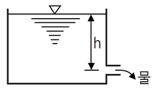
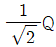
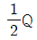
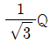
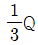
(정답률: 60%)
22. 다음 중 등엔트로피 과정은 어느 과정인가?
- 가역 단열과정
- 가역 등온과정
- 비가역 단열과정
- 비가역 등온과정
(정답률: 45%)
23. 비중이 0.95인 액체가 흐르는 곳에 그림과 같이 피토 튜브를 직각으로 설치하였을 때 h가 150mm, H가 30mm로 나타났다면 점 1위치에서의 유속(m/s)은?
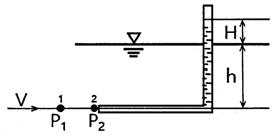
- 0.8
- 1.6
- 3.2
- 4.2
(정답률: 32%)
24. 어떤 밀폐계가 압력 200kPa, 체적 0.1m3인 상태에서 100kPa, 0.3m3인 상태까지 가역적으로 팽창하였다. 이 과정이 P-V 선도에서 직선으로 표시된다면 이 과정 동안에 계가 한 일(kJ)은?
- 20
- 30
- 45
- 60
(정답률: 36%)
25. 유체에 관한 설명으로 틀린 것은?
- 실제유체는 유동할 때 마찰로 인한 손실이 생긴다.
- 이상유체는 높은 압력에서 밀도가 변화하는 유체이다.
- 유체에 압력을 가하면 체적이 줄어드는 유체는 압축성 유체이다.
- 전단력을 받았을 때 저항하지 못하고 연속적으로 변형하는 물질을 유체라 한다.
(정답률: 56%)
26. 대기압에서 10℃의 물 10㎏을 70℃까지 가열할 경우 엔트로피 증가량(kJ/K)은? (단, 물의 정압비열은 4.18 kJ/㎏·K이다.)
- 0.43
- 8.03
- 81.3
- 2508.1
(정답률: 24%)
27. 물속에 수직으로 완전히 잠긴 원판의 도심과 압력중심 사이의 최대 거리는 얼마인가? (단, 원판의 반지름은 R이며, 이 원판의 면적관성모멘트는 Ixc＝πR4/4 이다.)
- R/8
- R/4
- R/2
- 2R/3
(정답률: 38%)
28. 점성계수가 0.101 N·s/m2, 비중이 0.85인 기름이 내경 300mm, 길이 3㎞의 주철관 내부를 0.0444 m3/s의 유량으로 흐를 때 손실수두(m)는?
- 7.1
- 7.7
- 8.1
- 8.9
(정답률: 44%)
29. 그림과 같은 곡관에 물이 흐르고 있을 때 계기 압력으로 P1 이 98kPa이고, P2가 29.42 kPa이면 이 곡관을 고정 시키는데 필요한 힘(N)은? (단, 높이차 및 모든 손실은 무시한다.)
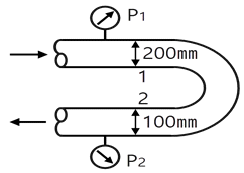
- 4141
- 4314
- 4565
- 4744
(정답률: 32%)
30. 물의 체적을 5% 감소시키려면 얼마의 압력(kPa)을 가하여야 하는가? (단, 물의 압축률은 5×10-10 m2/N 이다.)
- 1
- 102
- 104
- 105
(정답률: 48%)
31. 옥내 소화전에서 노즐의 직경이 2㎝이고, 방수량이 0.5m3/min이라면 방수압(계기압력, kPa)은?
- 35.18
- 351.8
- 566.4
- 56.64
(정답률: 35%)
32. 공기 중에서 무게가 941N인 돌이 물속에서 500N 이라면 이 돌의 체적(m3)은? (단, 공기의 부력은 무시한다.)
- 0.012
- 0.028
- 0.034
- 0.045
(정답률: 43%)
33. 림과 같이 비중이 0.8인 기름이 흐르고 있는 관에 U자관이 설치되어 있다. A점에서의 계기압력이 200kPa일 때 높이 h(m)는 얼마인가? (단, U자관 내의 유체의 비중은 13.6이다.)
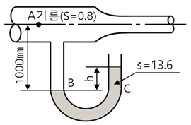
- 1.42
- 1.56
- 2.43
- 3.20
(정답률: 39%)
34. 열전달 면적이 A이고, 온도 차이가 10℃, 벽의 열전도율이 10W/(m·K), 두께 25㎝인 벽을 통한 열류량은 100W이다. 동일한 열전달 면적에서 온도 차이가 2배, 벽의 열전도율이 4배가 되고 벽의 두께가 2배가 되는 경우 열류량(W)은 얼마인가?
- 50
- 200
- 400
- 800
(정답률: 43%)
35. 지름 40㎝인 소방용 배관에 물이 80㎏/s로 흐르고 있다면 물의 유속(m/s)은?
- 6.4
- 0.64
- 12.7
- 1.27
(정답률: 48%)
36. 지름이 400mm인 베어링이 400rpm으로 회전하고 있을 때 마찰에 의한 손실동력(kW)은? (단, 베어링과 축 사이에는 점성계수가 0.049 N·s/m2인 기름이 차 있다.)
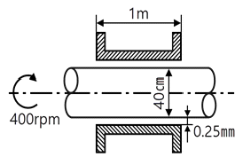
- 15.1
- 15.6
- 16.3
- 17.3
(정답률: 25%)
37. 12층 건물의 지하 1층에 제연설비용 배연기를 설치하였다. 이 배연기의 풍량은 500m3/min이고, 풍압이 290Pa일 때 배연기의 동력(kW)은? (단, 배연기의 효율은 60%이다.)
- 3.55
- 4.03
- 5.55
- 6.11
(정답률: 42%)
38. 다음 중 배관의 출구측 형상에 따라 손실계수가 가장 큰 것은?
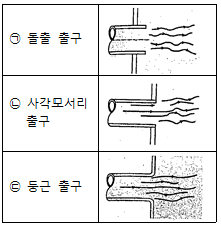
- ㉠
- ㉡
- ㉢
- 모두 같다.
(정답률: 49%)
39. 원관 내에 유체가 흐를 때 유동의 특성을 결정하는 가장 중요한 요소는?
- 관성력과 점성력
- 압력과 관성력
- 중력과 압력
- 압력과 점성력
(정답률: 55%)
40. 토출량이 1800L/min, 회전차의 회전수가 1000rpm인 소화펌프의 회전수를 1400rpm으로 증가시키면 토출량은 처음보다 얼마나 더 증가되는가?
- 10%
- 20%
- 30%
- 40%
(정답률: 48%)
3과목: 소방관계법규
41. 화재예방, 소방시설 설치·유지 및 안전관리에 관한 법령상 소방시설 등의 자체점검 중 종합정밀점검을 받아야 하는 특정소방대상물 대상 기준으로 틀린 것은?
- 제연설비가 설치된 터널
- 스프링클러설비가 설치된 특정소방대상물
- 공공기관 중 연면적이 1000m2 이상인 것으로서 옥내소화전설비 또는 자동화재탐지설비가 설치된 것 (단, 소방대가 근무하는 공공기관은 제외한다.)
- 호스릴 방식의 물분무등소화설비만이 설치된 연면적 5000m2 이상인 특정소방대상물 (단, 위험물 제조소등은 제외한다.)
(정답률: 51%)
42. 위험물안전관리법령상 제조소등이 아닌 장소에서 지정수량 이상의 위험물을 취급할 수 있는 경우에 대한 기준으로 맞는 것은? (단, 시·도의 조례가 정하는 바에 따른다.)
- 관할 소방서장의 승인을 받아 지정수량 이상의 위험물을 60일 이내의 기간 동안 임시로 저장 또는 취급하는 경우
- 관할 소방대장의 승인을 받아 지정수량 이상의 위험물을 60일 이내의 기간 동안 임시로 저장 또는 취급하는 경우
- 관할 소방서장의 승인을 받아 지정수량 이상의 위험물을 90일 이내의 기간 동안 임시로 저장 또는 취급하는 경우
- 관할 소방대장의 승인을 받아 지정수량 이상의 위험물을 90일 이내의 기간 동안 임시로 저장 또는 취급하는 경우
(정답률: 58%)
43. 소방기본법상 화재경계지구의 지정권자는?
- 소방서장
- 시·도지사
- 소방본부장
- 행정자치부장관
(정답률: 63%)
44. 위험물안전관리법령상 위험물 중 제1석유류에 속하는 것은?
- 경유
- 등유
- 중유
- 아세톤
(정답률: 56%)
45. 화재예방, 소방시설 설치·유지 및 안전관리에 관한 법령상 수용인원 산정 방법 중 다음과 같은 시설의 수용인원은 몇 명인가?
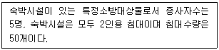
- 55
- 75
- 85
- 1⑤
(정답률: 63%)
46. 위험물안전관리법령상 관계인이 예방규정을 정하여야 하는 위험물을 취급하는 제조소의 지정수량 기준으로 옳은 것은?
- 지정수량의 10배 이상
- 지정수량의 100배 이상
- 지정수량의 150배 이상
- 지정수량의 200배 이상
(정답률: 54%)
47. 화재예방, 소방시설 설치·유지 및 안전관리에 관한 법령상 공동 소방안전관리자를 선임해야 하는 특정소방대상물이 아닌 것은?
- 판매시설 중 도매시장 및 소매시장
- 복합건축물로서 층수가 5층 이상인 것
- 지하층을 제외한 층수가 7층 이상인 고층 건축물
- 복합건축물로서 연면적이 5000m2 이상인 것
(정답률: 49%)
48. 소방기본법령상 소방안전교육사의 배치대상별 배치기준으로 틀린 것은?
- 소방청 : 2명 이상 배치
- 소방서 : 1명 이상 배치
- 소방본부 : 2명 이상 배치
- 한국소방안전협회(본회) : 1명 이상 배치
(정답률: 52%)
49. 소방시설공사업법령상 정의된 업종 중 소방시설업의 종류에 해당되지 않는 것은?
- 소방시설설계업
- 소방시설공사업
- 소방시설정비업
- 소방공사감리업
(정답률: 59%)
50. 소방기본법상 소방대장의 권한이 아닌 것은?
- 소방활동을 할 때에 긴급한 경우에는 이웃한 소방본부장 또는 소방서장에게 소방업무의 응원을 요청할 수 있다.
- 화재, 재난·재해, 그 밖의 위급한 상황이 발생한 현장에서 소방활동을 위하여 필요할 때에는 그 관할구역에 사는 사람 또는 그 현장에 있는 사람으로 하여금 사람을 구출하는 일 또는 불을 끄거나 불이 번지지 아니하도록 하는 일을 하게 할 수 있다.
- 사람을 구출하거나 불이 번지는 것을 막기 위하여 필요할 때에는 화재가 발생하거나 불이 번질 우려가 있는 소방대상물 및 토지를 일시적으로 사용하거나 그 사용의 제한 또는 소방활동에 필요한 처분을 할 수 있다.
- 소방활동을 위하여 긴급하게 출동할 때에는 소방자동차의 통행과 소방활동에 방해가 되는 주차 또는 정차된 차량 및 물건 등을 제거하거나 이동시킬 수 있다.
(정답률: 54%)
51. 소방시설공사업법상 도급을 받은 자가 제3자에게 소방시설공사의 시공을 하도급한 경우에 대한 벌칙 기준으로 옳은 것은? (단, 대통령령으로 정하는 경우는 제외한다.)
- 100만원 이하의 벌금
- 300만원 이하의 벌금
- 1년 이하의 징역 또는 1000만원 이하의 벌금
- 3년 이하의 징역 또는 1500만원 이하의 벌금
(정답률: 44%)
52. 화재예방, 소방시설 설치·유지 및 안전관리에 관한 법령상 주택의 소유자가 소방시설을 설치하여야 하는 대상이 아닌 것은?
- 아파트
- 연립주택
- 다세대주택
- 다가구주택
(정답률: 55%)
53. 소방기본법상 화재경계지구의 지정대상이 아닌 것은? (단, 소방청장·소방본부장 또는 소방서장이 화재경계지구로 지정할 필요가 있다고 인정하는 지역은 제외한다.)
- 시장지역
- 농촌지역
- 목조건물이 밀집한 지역
- 공장·장고가 밀집한 지역
(정답률: 65%)
54. 위험물안전관리법령상 제4류 위험물별 지정수량 기준의 연결이 틀린 것은?
- 특수인화물 - 50리터
- 알코올류 - 400리터
- 동식물유류 - 1000리터
- 제4석유류 - 6000리터
(정답률: 48%)
55. 화재 예방, 소방시설 설치·유지 및 안전관리에 관한 법상 소방시설등에 대한 자체점검을 하지 아니하거나 관리업자 등으로 하여금 정기적으로 점검하게 하지 아니한 자에 대한 벌칙 기준으로 옳은 것은?
- 6개월 이하의 징역 또는 1000만원 이하의 벌금
- 1년 이하의 정역 또는 1000만원 이하의 벌금
- 3년 이하의 징역 또는 1500만원 이하의 벌금
- 3년 이하의 징역 또는 3000만원 이하의 벌금
(정답률: 49%)
56. 소방기본법령상 특수가연물의 저장 및 취급 기준을 2회 위반한 경우 과태료 부과기준은?
- 50만원
- 100만원
- 150만원
- 200만원
(정답률: 29%)
57. 소방기본법령상 특수가연물의 품명과 지정수량 기준의 연결이 틀린 것은?
- 사류 - 1000㎏ 이상
- 볏짚류 - 3000㎏ 이상
- 석탄·목탄류 - 10000㎏ 이상
- 합성수지류 중 발포시킨 것 - 20m3 이상
(정답률: 53%)
58. 화재예방, 소방시설 설치·유지 및 안전관리에 관한 법령상 특정소방대상물로서 숙박시설에 해당되지 않는 것은?
- 오피스텔
- 일반형 숙박시설
- 생활형 숙박시설
- 근린생활시설에 해당하지 않는 고시원
(정답률: 63%)
59. 화재예방, 소방시설 설치·유지 및 안전관리에 관한 법령상 정당한 사유 없이 피난시설, 방화구획 및 방화시설의 유지·관리에 필요한 조치 명령을 위반한 경우 이에 대한 벌칙 기준으로 옳은 것은?(문제 오류로 가답안 발표시 4번으로 발표되었지만 확정답안 발표시 모두 정답처리 되었습니다. 여기서는 가답안인 4번을 누르면 정답 처리 됩니다.)
- 200만원 이하의 벌금
- 300만원 이하의 벌금
- 1년 이하의 징역 또는 1000만원 이하의 벌금
- 3년 이하의 징역 또는 1500만원 이하의 벌금
(정답률: 55%)
60. 화재예방, 소방시설 설치·유지 및 안전관리에 관한 법령상 소방시설이 아닌 것은?
- 소화설비
- 경보설비
- 방화설비
- 소화활동설비
(정답률: 54%)
4과목: 소방기계시설의 구조 및 원리
61. 상수도소화용수설비의 화재안전기준에 따라 호칭지름 75mm 이상의 수도배관에 호칭지름 100mm 이상의 소화전을 접속한 경우 상수도소화용수설비 소화전의 설치 기준으로 맞는 것은?
- 특정소화대상물의 수평투영면의 각 부분으로부터 80m 이하가 되도록 설치할 것
- 특정소화대상물의 수평투영면의 각 부분으로부터 100m 이하가 되도록 설치할 것
- 특정소화대상물의 수평투영면의 각 부분으로부터 120m 이하가 되도록 설치할 것
- 특정소화대상물의 수평투영면의 각 부분으로부터 140m 이하가 되도록 설치할 것
(정답률: 66%)
62. 분말소화설비의 화재안전기준에 따른 분말소화설비의 배관과 선택밸브의 설치기준에 대한 내용으로 틀린 것은?
- 배관은 겸용으로 설치할 것
- 선택밸브는 방호구역 또는 방호대상물마다 설치할 것
- 동관은 고정압력 또는 최고사용압력의 1.5배 이상의 압력에 견딜 수 있는 것을 사용할 것
- 강관은 아연도금에 따른 배관용탄소강관이나 이와 동등 이상의 강도·내식성 및 내열성을 가진 것을 사용할 것
(정답률: 65%)
63. 피난기구의 화재안전기준에 따라 숙박시설·노유자시설 및 의료시설로 사용되는 층에 있어서는 그 층의 바닥면적이 몇 m2 마다 피난기구를 1개 이상 설치해야하는가?
- 300
- 500
- 800
- 1000
(정답률: 51%)
64. 다음 설명은 미분무소화설비의 화재안전기준에 따른 미분무소화설비 기동장치의 화재감지기 회로에서 발신기 설치기준이다. ( ) 안에 알맞은 내용은? (단, 자동화재탐지설비의 발신기가 설치된 경우는 제외한다.)
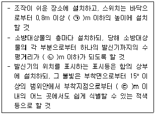
- ㉠ 1.5, ㉡ 20, ㉢ 10
- ㉠ 1.5, ㉡ 25, ㉢ 10
- ㉠ 2.0, ㉡ 20, ㉢ 15
- ㉠ 2.0, ㉡ 25, ㉢ 15
(정답률: 61%)
65. 소화기구 및 자동소화장치의 화재안전기준에 따른 캐비닛형자동소화장치 분사헤드의 설치 높이 기준은 방호구역의 바닥으로부터 얼마이어야 하는가?
- 최소 0.1m 이상 최대 2.7m 이하
- 최소 0.1m 이상 최대 3.7m 이하
- 최소 0.2m 이상 최대 2.7m 이하
- 최소 0.2m 이상 최대 3.7m 이하
(정답률: 44%)
66. 할로겐화합불 및 불활성기체소화설비의 화재안전기준에 따른 할로겐화합물 및 불활성기체소화설비의 수동식 기동장치의 설치기준에 대한 설명으로 틀린 것은?
- 5㎏ 이상의 힘을 가하여 기동할 수 있는 구조로 할 것
- 전기를 사용하는 기동장치에는 전원표시등을 설치할 것
- 기동장치의 방출용스위치는 음향경보장치와 연동하여 조작될 수 있는 것으로 할 것
- 해당 방호구역의 출입구부근 등 조작을 하는 자가 쉽게 피난할 수 있는 장소에 설치할 것
(정답률: 67%)
67. 연소방지설비의 화재안전기준에 따라 연소방지설비의 살수구역은 환기구 등을 기준으로 지하구와 길이방향으로 최대 몇 m 이내마다 1개 이상의 방수헤드를 설치하여야 하는가?(2021년 01월 15일 개정된 규정 적용됨)
- 150
- 350
- 700
- 1000
(정답률: 49%)
68. 구조대의 형식승인 및 제품검사의 기술기준에 따른 경사하강식구조대의 구조에 대한 설명으로 틀린 것은?
- 구조대 본체는 강하방향으로 봉합부가 설치되어야 한다.
- 연속하여 활강할 수 있는 구조로 안전하고 쉽게 사용할 수 있어야 한다.
- 땅에 닿을 때 충격을 받는 부분에는 완충장치로서 받침포 등을 부착하여야 한다.
- 입구틀 및 취부틀의 입구는 지름 50㎝ 이상의 구체가 통과할 수 있어야 한다.
(정답률: 62%)
69. 스프링클러설비의 화재안전기준에 따른 습식유수검지장치를 사용하는 스프링클러설비시험장치의 설치기준에 대한 설명으로 틀린 것은?
- 유수검지장치에서 가장 가까운 가지배관의 끝으로부터 연결하여 설치해야 한다.
- 시험배관의 끝에는 물받이 통 및 배수관을 설치하여 시험 중 방사된 물이 바닥에 흘러내리지 않도록 해야 한다.
- 화장실과 같은 배수처리가 쉬운 장소에 시험배관을 설치한 경우에는 물받이 통 및 배수관을 생략할 수 있다.
- 시험장치 배관의 구경은 유수검지장치에서 가장 먼 가지배관의 구경과 동일한 구경으로 하고 그 끝에 개폐밸브 및 개방형헤드를 설치해야 한다.
(정답률: 59%)
70. 화재조기진압용 스프링클러설비의 화재안전기준에 따라 가지배관을 배열할 때 천장의 높이가 9.1m 이상 13.7m 이하인 경우 가지배관 사이의 거리 기준으로 맞는 것은?
- 2.4m 이상 3.1m 이하
- 2.4m 이상 3.7m 이하
- 6.0m 이상 8.5m 이하
- 6.0m 이상 9.3m 이하
(정답률: 33%)
71. 옥내소화전설비의 화재안전기준에 따라 옥내소화전 방수구를 반드시 설치하여야 하는 곳은?
- 식물원
- 수족관
- 수영장의 관람석
- 냉장창고 중 온도가 영하인 냉장실
(정답률: 62%)
72. 스프링클러설비의 화재안전기준에 따른 특정소방대상물의 방호구역 층마다 설치하는 폐쇄형 스프링클러설비 유수검지장치의 설치 높이 기준은?
- 바닥으로부터 0.8m 이상 1.2m 이하
- 바닥으로부터 0.8m 이상 1.5m 이하
- 바닥으로부터 1.0m 이상 1.2m 이하
- 바닥으로부터 1.0m 이상 1.5m 이하
(정답률: 63%)
73. 포소화설비의 화재안전기준에 따른 용어 정 의중 다음 ( ) 안에 알맞은 내용은?
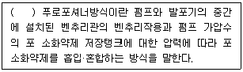
- 라인
- 펌프
- 프레져
- 프레져사이드
(정답률: 42%)
74. 소화기구 및 자동소화장치의 화재안전기준에 따른 수동으로 조작하는 대형소화기 B급의 능력단위 기준은?
- 10단위 이상
- 15단위 이상
- 20단위 이상
- 25단위 이상
(정답률: 65%)
75. 포소화설비의 화재안전기준에 따른 포소화설비의 포헤드 설치기준에 대한 설명으로 틀린 것은?
- 항공기격납고에 단백포 소화약제가 사용되는 경우 1분당 방사량은 바닥면적 lm2 당 6.5ℓ 이상 방사되도록 할 것
- 특수가연물을 저장·취급하는 소방대상물에 단백포 소화약제가 사용되는 경우 1분당 방사량은 바닥면적 lm2 당 6.5ℓ 이상 방사되도록 할 것
- 특수가연물을 저장·취급하는 소방대상물에 합성계면활성제포 소화약제가 사용되는 경우 1분당 방사량은 바닥면적 lm2 당 8.0ℓ 이상 방사되도록 할 것
- 포헤드는 특정소방대상물의 천장 또는 반자에 설치하되, 바닥면적 9m2마다 1개 이상으로 하여 해당 방호대상물의 화재를 유효하게 소화할 수 있도록 할 것
(정답률: 41%)
76. 소화기구 및 자동소화장치의 화재안전기준에 따라 대형소화기를 설치할 때 특정소방대상물의 각 부분으로부터 1개의 소화기까지의 보행거리가 최대 몇 m 이내가 되도록 배치하여야 하는가?
- 20
- 25
- 30
- 40
(정답률: 45%)
77. 소화수조 및 저수조와 화재안전기준에 따라 소화수조의 채수구는 소방차가 최대 몇 m 이내의 지점까지 접근할 수 있도록 설치하여야 하는가?
- 1
- 2
- 4
- 5
(정답률: 55%)
78. 미분무소화설비의 화재안전기준에 따른 용어 정의 중 다음 ( ) 안에 알맞은 것은?
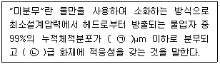
- ㉠ 400, ㉡ A, B, C
- ㉠ 400, ㉡ B, C
- ㉠ 200, ㉡ A, B, C
- ㉠ 200, ㉡ B, C
(정답률: 59%)
79. 분말소화설비의 화재안전기준에 따라 분말소화약제 저장용기의 설치기준으로 맞는 것은?
- 저장용기의 충전비는 0.5 이상으로 할 것
- 제1종 분말(탄산수소나트륨을 주성분으로 한 분말)의 경우 소화약제 1㎏당 저장용기의 내용적은 1.25ℓ일 것
- 저장용기에는 저장용기의 내부압력이 설정압력으로 되었을 때 주밸브를 개방하는 정압작동장치를 설치할 것
- 저장용기에는 가압식은 최고사용압력 2배 이하, 측압식은 용기의 내압시험압력의 1배 이하의 압력에서 작동하는 안전밸브를 설치할 것
(정답률: 55%)
80. 할론소화설비의 화재안전기준에 따른 할론 1301 소화약제의 저장용기에 대한 설명으로 틀린 것은?
- 저장용기의 충전비는 0.9 이상 1.6 이하로 할 것
- 동일 집합관에 접속되는 용기의 충전비는 같도록 할 것
- 저장용기의 개방밸브는 안전장치가 부착된 것으로 하며 수동으로 개방되지 않도록 할 것
- 축압식 용기의 경우에는 20℃에서 2.5MPa 또는 4.2MPa의 압력이 되도록 질소가스로 축압할 것
(정답률: 54%)